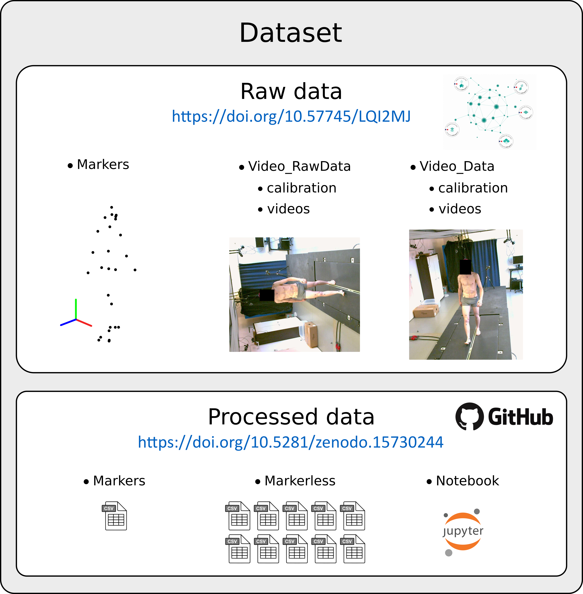

I'm an Associate Professor in the mechanics department at University Claude Bernard Lyon 1. I conduct my research activities at the Laboratory of Biomechanics and Impact Mechanics (LBMC UMR T_9406). My research activites mainly concern the development of numerical tools for in situ motion analysis. Currently, my work has focused on markerless video-based analysis.
For any inquiries, feel free to reach out to me via mail!

@InProceedings{muller2025benchmarking,
author = {Antoine Muller and Alexandre Naa{\"\i}m and Rapha{\"e}l Dumas and Thomas Robert},
title = {Benchmarking raw datasets and collaboratively-evolving processed data for markerless motion capture analysis},
journal = {Data in Brief},
year = {2025},
}@InProceedings{chaumeil2025confidence,
author = {Ana{\"\i}s Chaumeil and Pierre Puchaud and Antoine Muller and Rapha{\"e}l Dumas and Thomas Robert},
title = {A Confidence-Based Multibody Kinematics Optimization for Markerless Motion Capture: A Proof of Concept},
journal = {International Journal for Numerical Methods in Biomedical Engineering},
year = {2025},
}
Feel free to use this website as a template! It is fully responsive and very easy to use and maintain as it uses a python script that crawls your bib files to automatically add the papers and talks. If you find it helpful, please add a link to my website - I will also add a link to yours (if you want). Checkout the github repository for instructions on how to use it.
⚛
⚛